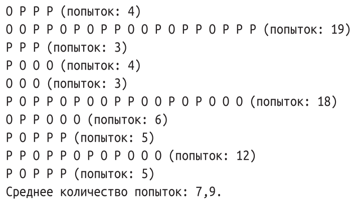

15. Подбрасываем монетку. (в коде есть строки из следующих тем: "списки, библиотеки").
Условие:
Какое минимальное количество раз вы должны подбросить монетку, чтобы три раза подряд выпал либо орел, либо решка? А какое максимальное количество попыток может для этого понадобиться? А в среднем? В данном упражнении мы выясним это, создав симулятор подбрасывания виртуальной монетки.
Напишите программу, использующую для подброса монетки генератор случайных чисел Python.
Монетка при этом должна быть правильной формы, что означает равную вероятность выпадения орла и решки. Подбрасывать монетку необходимо до тех пор, пока три раза подряд не выпадет одно значение, вне зависимости от того, орел это будет или решка.
Выводите на экран букву О всякий раз, когда выпадает орел, и Р – когда выпадает решка. При этом для одной симуляции бросков все выпавшие значения необходимо размещать на одной строке. Также необходимо известить пользователя о том, сколько попыток потребовалось, чтобы получить нужный результат.
Программа должна выполнить десять симуляций и в конце представить среднее количество подбрасываний монетки, требуемое для достижения нужного нам результата.
Пример:

Код:
import random
amount_try = 0
count = 0 # счётчик попыток (должно быть 10)
while count < 10:
count += 1 # прибавляем 1 попытку
result_list = [] # при новой попытке список выпаданий обнуляется
count_int = 2
result_list.append(random.randint(1, 2)) # заполним 1-е значение для списка
if result_list[0] == 1: # печать орел или решка
print("О ", end="")
else:
print("Р ", end="")
result_list.append(random.randint(1, 2)) # заполним 2-е значение для списка
if result_list[1] == 1: # печать орел или решка
print("О ", end="")
else:
print("Р ", end="")
while True: # будем искать три совпадения подряд для орла или решки
count_int += 1
x = random.randint(1, 2)
result_list.append(x)
if result_list[-1] == 1: # печать орел или решка
print("О ", end="")
else:
print("Р ", end="")
if result_list[-1] == result_list[-2] == result_list[-3]:
print(f"(попыток: {count_int})")
break
amount_try += count_int
print()
print("Среднее количество попыток:", round((amount_try / 10), 1))
print()